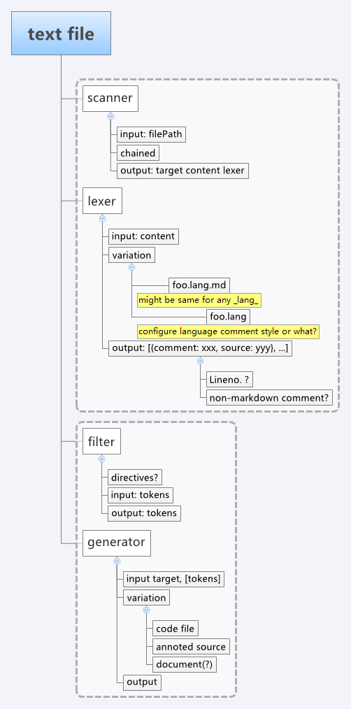

inspiring CDUK the modularized and flexible docco
2013-06-15
最近在看Backbone&Underscore的时候，对他们的annoted source（backbone / underscore）产生了好感，然后发现他们都是用 Docco 来做的。
后来顺藤摸瓜发现除了类似backbone/underscore的将注释按markdown写的做法，还有更加彻底的将代码写进markdown中的做法，coffeescript已经有支持（literate-coffeescript）。
挖进源码看docco，我发现他的可扩展性存在问题，用少量代码迅速完成了核心功能但并不易扩展。最近又手痒的厉害于是干脆挖坑自己写一个literal programming用的工具。
这里记录下最初的目的和一些想法，目前的进度是基于markdown四空格的lexer已经可以跑了。
基本结构

scanner
- 职责：读取文件，分析文件格式，确定应当如何处理文件
- 输入：文件路近 filePath
- 输出：
- 生成目标target
- 文件内容content
- lexer对象
- 逻辑：职责链模式允许挂载多个scanner，直到有一个scanner发出响应，可方便扩展
lexer
- 职责：将文件内容解析为token串
- 输入：文件内容content
- 输出：tokens
- 逻辑：
- 将带注释的行认定为文档内容，反之为代码
- 将带四空格的行认定为代码，反之为文档内容
filter
- 职责：分析过滤token串，实现诸如directives的高级功能
- 0.1不做
generator
- 职责：生成最终结果
- 输入：tokens target
- 输出：最终输出
- 逻辑：允许叠加多个generator来同时输出各种产物
风格
最小核心 + 常用扩展 - 可替代功能 ~ 就像connect / grunt那样
核心代码做尽可能少的工作（比如connect核心就只有注册middleware和串联middleware）将细节留给扩展。
但为了学习曲线和使用方便，包括一些简单常用的扩展（初步规划是参照docco，docco有的功能考虑内置）
可以被其他“胶水工具”替代的功能不做，比如遍历目录、watch文件变化等
按合约编程 ~ promise / assertion
我们制定了接口后，按合约编程，所以用promise来描述异步的约定，用assert来确认同步的情况。
代码代替配置
人们要了解配置如何工作，必须追踪千山万水跨过配置解释器的天堑才有可能找到最终使配置生效的代码。但如果起配置作用的就是代码的话，一个断点和若干次追踪就能找到。对代码不满意的话，（至少在JS中）可以很容易地动态改变一下对象的行为来达成自己的目的，但对配置项不满意就没那么幸运了